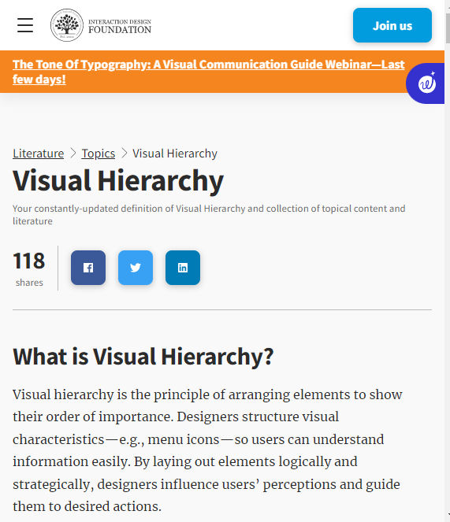

Visual Hierarchy
interaction-design.org

Visual hierarchy is the principle of arranging elements to show their order of importance. Designers structure visual characteristics—e.g., menu icons—so users can understand information easily. By laying out elements logically and strategically, designers influence users’ perceptions and guide them to desired actions.